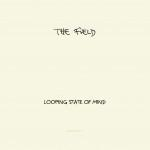

Music Reviews
-

Spyro Gyra A Foreign Affair
With the release of A Foreign Affair, Spyro Gyra haven't done too much to dispel the notion that startling, inventive jazz is largely a thing of the past.
Matt Montgomery reviews... -

Wolves in the Throne Room Celestial Lineage
Pacific Northwesterners Wolves in the Throne Room have always walked a very precarious line in their attempting to create tasteful black metal. They've managed to just about get away with it for three albums now, but will their latest Celestial Lineage finally see them come undone?
Mark Davison is sad to find that these wolves have been defanged... -

The Field Looping State of Mind
After winning his surprise critical acclaim with 2007 debut From Here We Go Sublime, and branching out into more organic textures on Yesterday and Today, minimal techno producer The Field meets his two previous albums halfway with another gorgeous piece of repetitive soundscaping.
Stephen Wragg is, well, in a looping state of mind... -
Tyler, The Creator Goblin
Homophobe, chauvinist, slanderer, pervert, basketcase - or just a normal 19 year old with an outrageous talent and a big mouth? Let's hope Goblin can shed some light.
Joe Iliff reviews... -
Neon Indian Era Extraña
Neon Indian's first concept album about heartbreak instead of acid.
Michael Iovino reviews... -
Big Talk Big Talk
Drummer Ronnie Vannucci Jr. recently released his solo debut. Will it be "Killer" or just Big Talk?
Benjamin Jones talks the Talk... -

A.A. Bondy Believers
The Alabama singer-songwriter's latest finds him soul-searching along a downtrodden path, which consequently discloses his true character along the way.
Juan Edgardo Rodríguez strolls down misery lane... -
Fool's Gold Leave No Trace
Fool's Gold's second record, Leave No Trace, is like dark chocolate digestives - you'll eat them, but you always hoped for something else.
Joe Iliff wants a chocolate biscuit, now you do too... -

Ladytron Gravity the Seducer
Liverpudlian synth-revivalists Ladytron just might be Britain's most stylish band, and album number five, Gravity the Seducer, promises to be just as sleek and cool as ever.
Seduced? Mark Davison is besotted... -

Widowspeak Widowspeak
Widowspeak's solid grasp of atmosphere and textures can't overcome the songs' distinctly unmemorable melodies which amble along with a lack of purpose.
Pierce Brown reviews